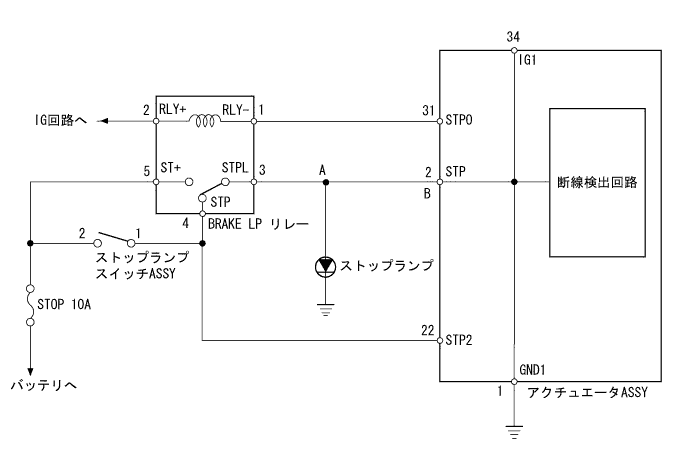
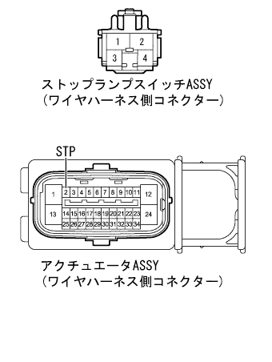
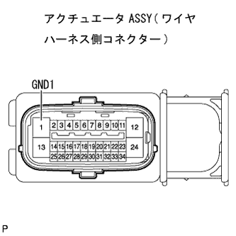

DTC C1249/49 Stop Light Switch Open Circuit Detected |
| DTC No. | DTC Detection Condition | DTC Output Related Items |
|---|---|---|
| C1249/49 | With IG1 terminal voltage at 9.5V or higher, an open in the stop light circuit (between A ←→ B or A ←→ body ground) continues for 0.3 seconds or more |
|

| Step 1 | Inspect Fuse (STOP 10A) |
Using the SST (Toyota electrical tester), measure the resistance of the fuse (STOP 10A).
| Tester Connection | Condition | Standard |
|---|---|---|
| STOP Fuse | Always | Below 1 Ω |
|
| ||||
| OK | |
| Step 2 | Inspect Stop Light Illumination |
Turn the IG ON, depress the brake pedal, and check that the stop lights come on.
|
| ||||
| OK | |
| Step 3 | Inspect Wire Harness and Connector (Actuator Assembly - Stop Light Switch Assembly) |
Turn the IG OFF and disconnect the actuator assembly and stop light switch assembly connectors.
Check that the connector case and terminals are free of deformation and corrosion.
 |
Using the SST (Toyota electrical tester), measure the resistance of the wire harness side connectors between the actuator assembly and stop light switch assembly.
| Tester Connection | Condition | Standard |
|---|---|---|
| 2(STP) - 1 | Always | Below 1 Ω |
|
| ||||
| OK | |
| Step 4 | Inspect Wire Harness and Connector (GND1, GND2) |
 |
Turn the IG OFF and disconnect the actuator assembly connector.
Using the SST (Toyota electrical tester), measure the resistance between the wire harness side connector of the actuator assembly and body ground.
| Tester Connection | Condition | Standard |
|---|---|---|
| 1 (GND1) - Body ground | Always | Below 1 Ω |
|
| ||||
| OK | |
| Step 5 | Recheck DTC |
Clear the DTCs, perform a road test, and check the DTCs again. (see)
| Result | Proceed to |
|---|---|
| OK | A |
| Malfunction Code | B |
|
| ||||
| A | ||
| ||